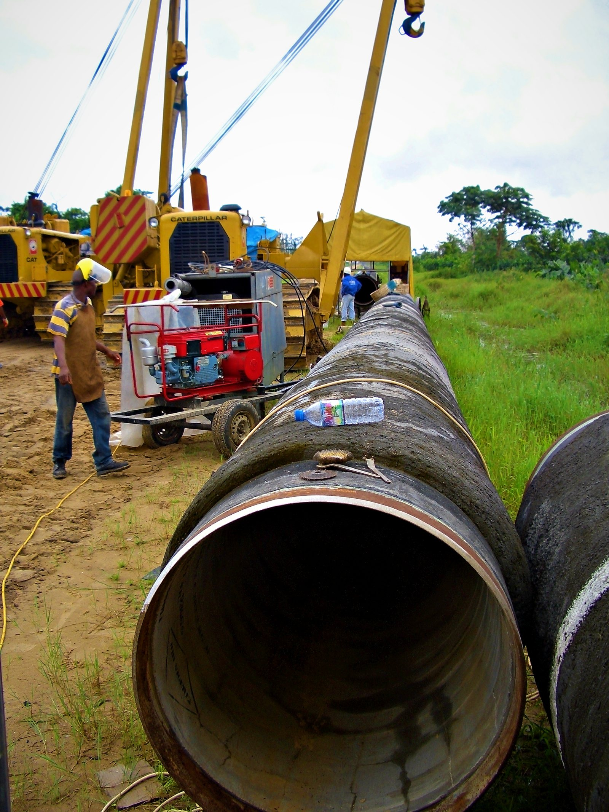
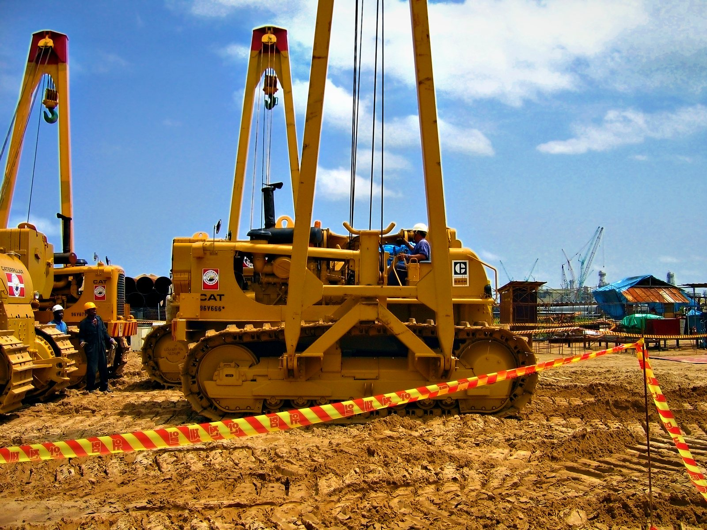

Pipeline construction and associated works, built on experience in the field.
A field-driven pipeline contractor
ICON Pipeline E&C builds oil and gas pipelines, shore approaches and the associated works that go with them. We are led by people who have spent their careers on the right-of-way.
Our management team has planned and built pipelines across difficult terrain: tropical swamps, river crossings, desert and coastal landfalls. That experience shapes how we work. We plan from the ground up, keep decision-makers on site and solve problems where they happen, not in a distant office.
We work as a main contractor, as a subcontractor to EPC and EPCI companies, and alongside specialist partners for HDD and microtunneling, bringing the same standards of safety, quality and delivery to every role.

What drives us
The pipeline contractor clients call first
To be the trusted partner for complex pipeline projects, recognized for safe execution, dependable delivery and the quality of our people.
Build it safely, build it right, build it on time
To construct pipelines and associated works safely, to specification, on schedule and on budget, with skilled people, proven methods and respect for the communities and environments where we work.
How we work
Six principles guide every decision we make, from bidding a project to handing it over.
Safety First
No task is so important that it cannot be done safely. Everyone on our sites has the authority to stop unsafe work.
Quality
Built right the first time, to specification and fully documented, so our work stands up for decades.
Integrity
We are honest about risks, costs and progress, with our clients, our partners and our own people.
Delivery
Realistic plans and disciplined execution. We commit to what we can deliver, then deliver it.
Teamwork
One team with our clients, subcontractors and local workforce, working to a shared plan and a shared standard.
Respect
For the land we cross, the communities we work beside and every person on the job.
From award to handover
Every project follows the same disciplined path, adapted to its terrain, season and client requirements.
Plan
Route walk-downs, constructability reviews, execution plans and schedules built with the people who will do the work.
Mobilize
Equipment, camps, pipe yards, access roads and qualified crews in place before construction begins.
Execute
Daily planning, close supervision and transparent progress reporting against agreed targets.
Hand Over
Testing, pre-commissioning, reinstatement and complete as-built records delivered on time.
What our clients can count on
- Leadership on site: experienced managers and superintendents who make decisions at the work front
- Proven methods: mechanized and manual welding, conventional and trenchless crossings, wet-ground and shore approach construction
- Flexible delivery: as main contractor, EPC/EPCI subcontractor or joint-venture partner
- Trusted partners: reputable HDD, microtunneling and specialist contractors under one schedule and one QHSE standard
- Cost certainty: realistic estimates, disciplined change control and no surprises at completion
- Local commitment: local hiring, training and suppliers wherever we work

Our strength is our people
Pipelines are built by skilled crews. We invest in them, and in the communities where they live and work.
Skilled Workforce
Welders, operators, riggers and supervisors trained, qualified and assessed for the work they do.
Developing Talent
On-the-job training and mentoring that turn local hires into qualified tradespeople and future supervisors.
Local Communities
Early engagement, local employment and procurement, and respect for landowners, culture and daily life along the route.